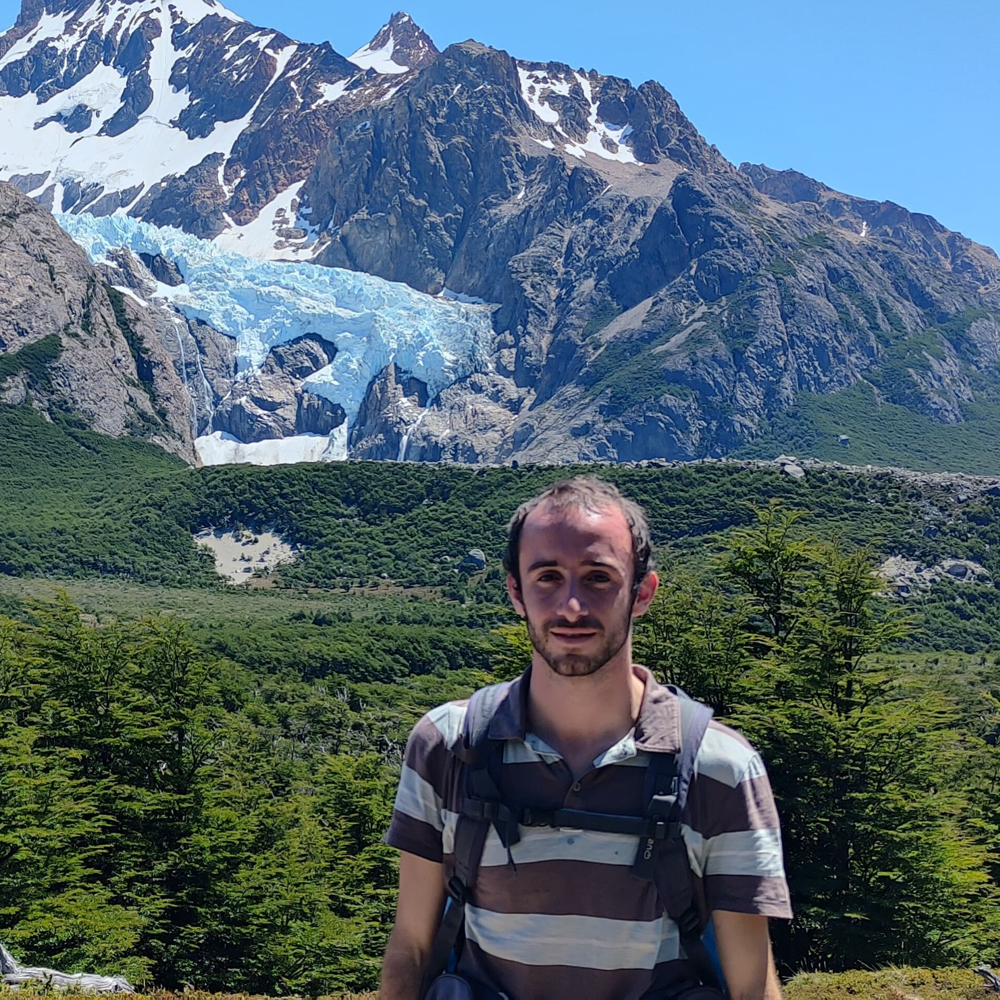

An isolated quantum system cannot share information with the external world, and thus evolves unitarily. However, if the system interacts with its environment in a non-negligible way, its evolution is described by the much richer class of CPTP maps. Lindblad dynamics is a remarkable case - pervasive in Quantum Optics and thermodynamics - describing the evolution of a system weakly coupled to a memory-less environment. It is known that under this irreversible dynamics, a system needs an infinite time to shrink the support of its initial state, i.e. "cannot purify in finite time". In recent works, we aimed to make this statement more precise by providing a lower bound to the minimum time to join arbitrary initial and final quatum states under Lindblad dynamics of bounded norm. As desired, the bound diverges whenever the initial state is not supported in the final one, significantly improving previous finite lower bounds in the literature. From mathematical point of view, the minimal time between pairs of states becomes a quasi-distance - $T(\rho,\sigma) \neq T(\sigma,\rho)$ - with underlying Finsler structure. Then, minimum-time conversion tasks can be read as geodesic-finding problem, of interest for Quantum Control Theory.
Mountaineering, music (listening and making), philosophy and mathematics.
Oct. 25 - Now: PhD. Uniwersytet Jagielloński, Kraków, Poland. Supervised by Prof. Karol Życzkowski.
Oct. 24 - Jun. 25: Masters degree in Theoretical Physics. Universidad Complutense de Madrid, Spain.
Oct. 20 - Jun. 24: Bachelor degree in Physics. Universidad Complutense de Madrid, Spain.
Sept. 26: "Reachable sets for Kolmogorov dynamics in the probability simplex" Alfonso Fernández de Bobadilla, Mykhailo Hontarenko, Guillem Müller-Rigat and Karol Życzkowski. Preprint
Dec. 24: "Deformation Quantization in FLRW geometries" Alfonso Fernández de Bobadilla, José Alberto Ruiz Cembranos. European Physical Journal C